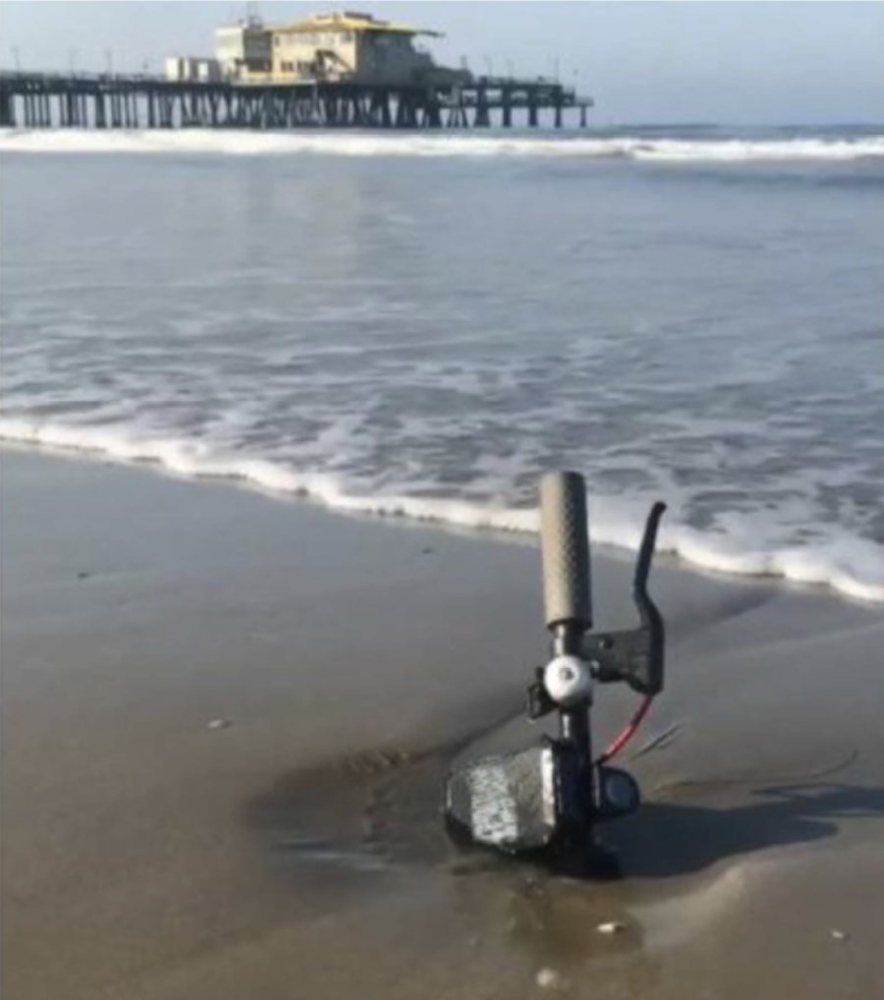
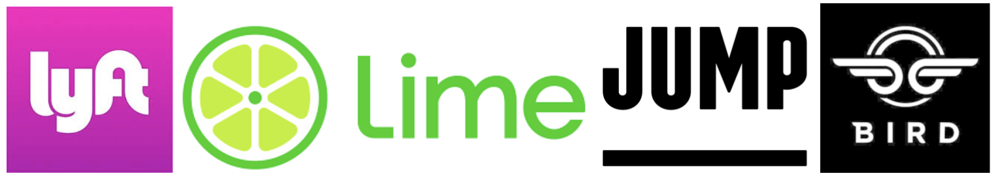
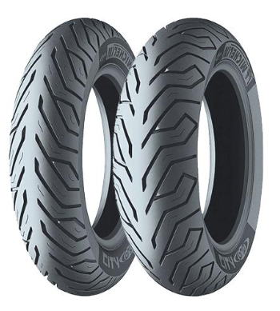
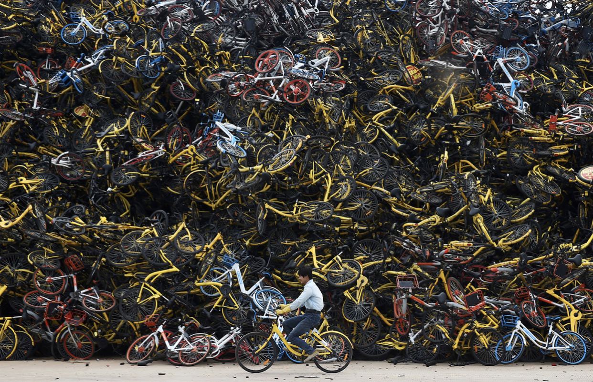
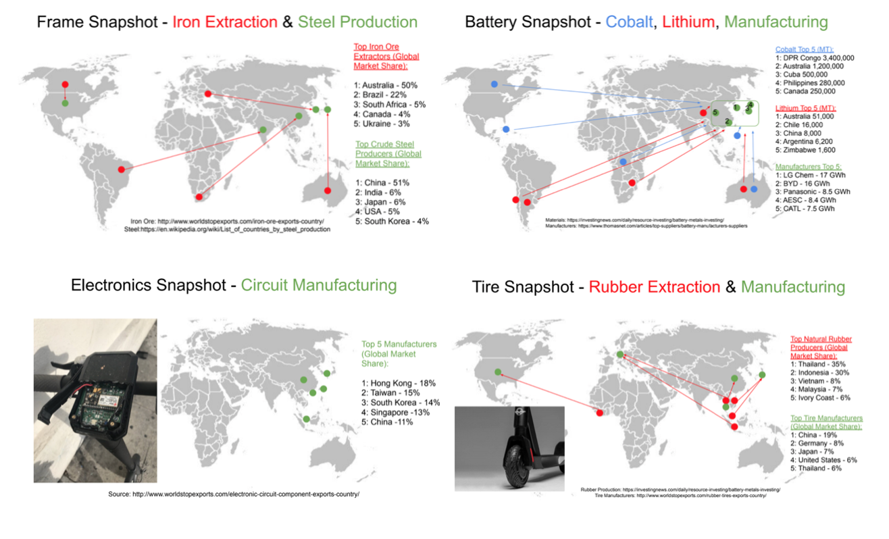
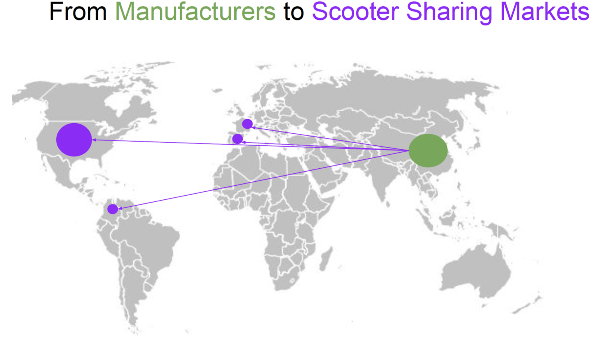
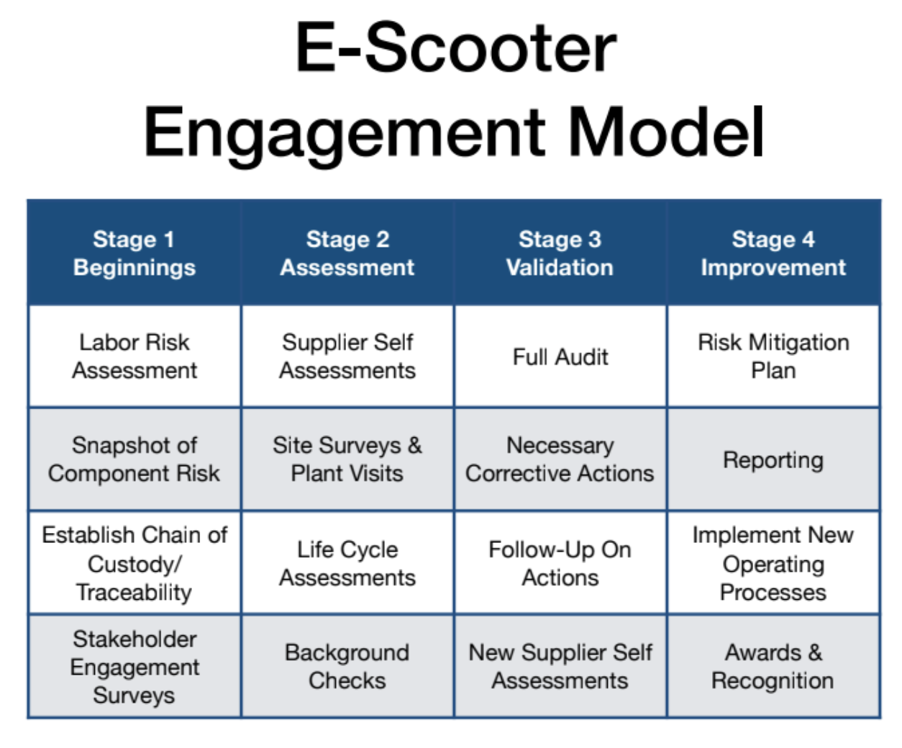
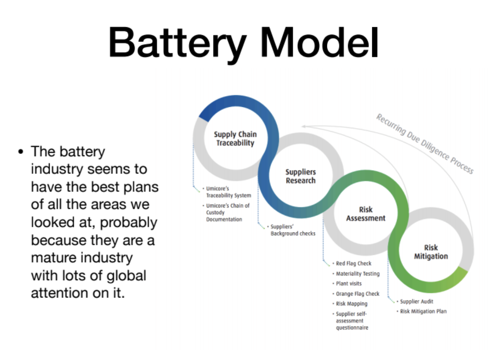
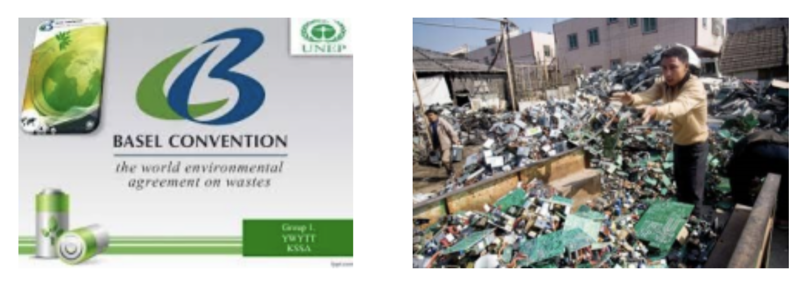

Definition

- Electronic mobility companies provide short-term rentals of electronic scooters and e-bikes designed to take people short distances
- This service compliments other mobility options, including a first/last mile solution for busses/trains
- The devices are dockless, accessed using mobile apps, and are rebalanced, charged, & maintained by gig workers
- Industry first launched in San Francisco in 2012. US companies emerged in late 2017, so the industry is very young
** Developed out of docked bike-share, which has quickly morphed into dockless bike-share, and now to scooter-share
Supply Chain Overview
Major Manufacturers:
- Segway-Ninebot (China)
** Manufactures segways, e-bikes, “hoverboards”, scooters, and more. ** One factory puts out 200,000 scooters per month and provides 80% of the global market. ** Many companies are shifting to industrial/fleet designs.
- Xiaomi Number 9 (China)
** Currently retails for $400-$600; wholesale prices are lower. ** This is not a fleet or industrial design! This is for retail sale.
- Electisan (China)
Other manufacturers include: Xiaomi, Razor, NIU Technologies, Gogoro, and MANY others
Major Players
- Bird
** First & largest company in USA ** Available in 100+ cities
- Lime
** Available in 100+ cities in nationally, 15+ internationally
- Lyft (and Divvy)
** First got into market in bike-share
- Jump (Uber)
** Started independently, acquired by Uber in April 2018 ** Aims to become a core service of the platform
- Other companies include Bolt, Scoot, Skip, Spin, Razor, Wheels
- Competes directly with bike-share

Recent & Relevant News
- Currently, companies are not focused on sustainability - the DO NOT have a plan. Primary goal was initially on proof of concept in developed world. Now focus is on maintaining (or dominating) market share through growth.
- The major roadblock for the industry is securing supply - relying on one major manufacturer is major risk to everyone.
- Most companies have more sturdy designs in the medium-term plans, but focus on growth first as “necessary for survival”.
- Best analogy to current scooter sharing industry is bike sharing...
Legal Issues & Major Controversies
Rubber tires & tubes

- Raw materials
** Extraction *** 47% Natural Rubber - Sustainable vs non-sustainable **** 90% of this comes from Southeast Asia. **** Deforestation caused by monoculture **** Human rights issues in labor relations and in deforestation *** 53% Synthetic Rubber (Plastic)
- Production
** Toxic byproducts
- Post Consumer
** 70% of rubber is recycled (down-cycled or burned) ** Recycling rubber is difficult post-vulcanization *** R&D is going into solving this issue.
Electronic Components
- Raw materials
** Rare earths are Byproduct
- Production
** Toxic byproducts - heavy metals *** Phthalates, beryllium, antimony, BFRs, PVC, lead…... (https://en.wikipedia.org/wiki/Electronic_waste#Electronic_waste_substances)
- Post Consumer
** Only 25% of E-waste is actually recycled ** Recycling produces a new set of toxic byproducts ** Environmental hazards around facilities

Mapping the Supply Chain


Supplier Engagement Model


Governance
- 1997 Basel Convention on waste prohibits the export of hazardous wastes from developed countries to developing countries - developed nations must recycle their own hazardous waste.
- US is a signatory, but never ratified the convention.
- Globally, only 16% of e-waste is properly recycled, much of the rest goes to landfills or is “donated”.
- China had been the largest importer of all waste (including e-waste) until 2018, but has since restricted the trade.
- Much of the “usable ” e-waste ends up in the developing world: India, Ghana, etc.

Benchmarks
- Umicore has pioneered sustainable cobalt sourcing since 2004 via its Sustainable Procurement Framework for Cobalt
- Cobalt Institute - CIRAF Cobalt Industry Responsible Assessment Framework
- Global Battery Alliance
- “Better Cobalt”
- Glencore, Eurasian Resources Group (ERG), China Molybdenum Co. Ltd. (CMOC) have developed corporate social responsibility programs
Monitoring
Rubber Tires & Tubes
- Global Platform for Sustainable Natural Rubber (GPSNR) launched in October 2018.
** Aims to increase visibility of sustainably sourced rubber.
- International Rubber Study Group (IRSG - Industry lobby) launched Sustainable Rubber Group which benchmarks best practices in sustainability.
- Rainforest Alliance seeks to protect rainforest and shift production to sustainably sourced - using degraded land rather than pristine rainforest.
- Michelin & Goodyear are the two largest purchasers of rubber and have leaned heavily on suppliers to clean up industry - both have partnered with WWF & Rainforest Alliance to have 100% renewable natural rubber by 2050.
Electronic Components
- Green Electronics Council - Founded 2005
** Created the Electronic Product Environmental Assessment Tool (EPEAT) to grade products. ** EPEAT measures 50 different criterion and grades products Gold, Silver or Bronze. ** All US Federal Agencies must consider EPAT when purchasing. ** This measure is a controversial- several products have been accused of “greenwashing” by gaming the results.
- Sustainable Electronics Institute - Founded 2009
** Partnered with the University of Illinois-Urbana Champlain ** Provides research, education and assists in implementation of green building practices. ** Aims to minimize waste through life cycle analysis. *** Designing for demanufacturing.
Verification
Reporting
Life Cycle Assessments
Other Challenges & Impacts
- Raw Materials
** Lithium and Cobalt (co-product from Copper and Nickel mining) ** In 2016 the largest Lithium mining companies put out 211.3 million metric tonnes of carbon ** Labor concerns with Large Scale Mining (LSM) vs Artisanal Scale Mining (ASM)
- Production
** Manufacturing is done in China, South Korea and Japan where power is mostly fossil fuels ** 3 megafactories in 2015 (57 GWh), 33 megafactories by 2023 (430 GWh) ** If a Lithium-ion battery fails, it might explode
- Post Consumer
** Lithium-ion batteries degrade quickly and last 2-3 years, used or not ** The volume of material available for recycling is limited due to poor collection systems ** Opportunity for electric vehicle batteries to be used in utility-scale storage solutions
Innovations
Conclusions
Sources and References
- https://www.theatlantic.com/photo/2018/03/bike-share-oversupply-in-china-huge-piles-of-abandoned-and-broken-bicycles/556268/
- https://www.bloomberg.com/news/features/2018-12-05/almost-every-electric-scooter-comes-from-this-chinese-company
- Source: https://techcrunch.com/2018/12/23/the-electric-scooter-wars-of-2018/